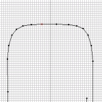
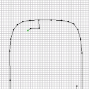
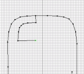
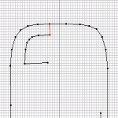

This tutorial will learn you the basics of how to create pinball tables with the editor. It is assumed that you have some basic knowledge of 3D modelling, you need at least to know what a vertex and a polygon is. You also have to, at least once in your life, written a hello-world c/c++ program and compiled it. Beware that the editor is at an alpha stage and that some things ain't that intiutive and others are purely clumsy. Remember to save often, the editor may crash (no surprise). Know that that's said let's start.
top
First you have to create a working directory for your table.
Do this with the 'pinball-template' script, the script is found
in the same director as the 'pinedit' program. Execute
'pinball-template mytable MyMod' to create a directory
with the name 'mytable' and a module with the name MyMod.
The script will copy a makefile, an empty table and a module to
your directory. Now you have a new fresh table which we will load into the editor.
Press the 'open file' button, and choose the
'mytable/pinball.pbl' file. Now a simple table pops up in the editor.
Do no confuse the open button with the 'load object' button.
Before we start adding objects let's see how you compile the table and load it in to the pinball game. Make sure that have autoconf 2.13 and automake 1.4 installed. Older as well as newer version of autoconf/automake may break the compilation, read further if you have different version. First you have edit the file 'mytable/Makefile.am', change every instance of 'template' with 'mytable'. Go to your table directory and execute './bootstrap', this will set up the configure and make scripts. Then configure the table with './configure --with-pinball-prefix=pinball_source_dir' where pinball_source_dir points to the root directory of the pinball sources, in our case '../pinball'.
Now make the table with 'make'. If your version of autoconf/automake doesn't like the scripts you can try to hack the 'Makefile.fix' file and use 'make -f Makefile.fix' and skip the 'bootstrap/configure' thing. Run 'pinball -dir' to see your systems path to the pinball data directory. It should be something like'/usr/local/share/pinball' or '/usr/share/pinball'. The directories 'tux' and 'professor' should reside in that directory. Then do a 'make install' ('make -f Makefile.fix install') as root user to install the table. If it fails you can try to manually copy the files to the data directory.
Start up the pinball game and you should now see 'mytable' alongside 'tux' and 'professor' in the table meny. Each directory that is found in the data directory is added to the loadable tables in the game, the game will look for the 'pinball.pbl' file when trying to load a table. It is not yet possible to test play the table from editor so this is how you debug your tables. If you have compiled the game as a debug version (the game included with the editor package is debug as default, stand alone game package is not debug) you can steer the ball with 'i' ,'j', 'k' and 'l' keys.
topWalls are created by adding polygons to the table. The easiest way is to select a corner of an existing wall and then extrude it. Pop up the editor again and open your table. Select the 'objects' tab in the right part of the editor. Open up the object called 'walls', you see that the object has two children, select 'shape 0'. Now the buttons for editing shapes will be enabled and 'shape 0' will be shown in the 2D panels. You can move around in the 2D views by dragging with the right mouse button. Clicking middle button centers the view. The zoom can be changed in the spinbox up to right.
Enable the select button and in the 2D view select
a corner in the top of the table by dragging the a square around the corner with the
left mouse button.. Extrude it to an new wall by clicking the extrude
button
. Select move
and move the new wall down. Extrude and move until you have created an open circle.
Delete the unnecessary polygon by selecting it and clicking
.
 
 

Then select the edges of the open wall and create a polygon by clicking the
new polygon button . Polygons does, unfortunately,
not always come out right. Use the 3D view to look at your walls (rotation
and moving in the 3D view is a bit inconvenient at the moment, it will
be fixed later). If the vertex order of your polygons are wrong you can
change it in the 'polygons' tab. Select your polygon and go to the
'polygons' tab in the right of the editor. Scroll down to the highlighted
polygon and click on it. Now you can change to order of the vertices
by selecing the vertex in the 'vertices of polygon' list and changing
the order by moving it up or down in the 'order' tab below. If
the polygon only faces in the wrong direction you can fix it
by fliping it
.
Your walls look quite naked without any roof, right? Add the roof to 'shape 1'. This is left as an exercise for the reader. The reason to split the roofs and the walls is that we do not won't to check for collision between the roofs and the ball, only between the walls and the ball. Hence, collision detecion is only preformed on the first shape in the object, this way decortive shapes can be added without giving performance penalties to the collision detection.
top
There are a number of prebuilt objects in 'pinedit/data' directory that
can be used in the tables. The load object button
inserts the object into the table.
All loadable objects has filenames ending with '.pbl'.
Load the object 'pinedit/data/bumper.pbl'. Go to the object tab and
select the object called 'bumper'. Select the 'move object' button
and move the bumper to the top right
corner of the table by dragging it with the left muose button. Add two
more bumpers and create a nice formation.
You can add a sound that is played each time the ball hits the bumper by opening the object in the object tab and selecting the child called 'bumper behavior'. With the 'edit behavior' button below you can pop up a dialog to select a wav-file for your sound. Even if the editor allows you to pick files in any directory the file must be in the 'mytable' directory. There are some sound files in the 'pinedit/data' directory that you can copy to your table directory. You also have to edit the 'Makefile.am' to add your sounds. E.g.
... mytabledata_DATA = pinball.pbl mysounfile1.wav mysoundfile2.wav ...Otherwise the sounds won't be installed. If your using the 'Makefile.fix' file you have to manually copy the files into '/usr/local/share/pinball/mytable'. top
Arms can be found in the files 'left_arm.pbl' and 'right_arm.pbl'. You can add a sound also to the arms. But as the table already has two arms we don't add any more arms.
topYou'll find two locks and a release button in the files 'lock1.pbl', 'lock2.pbl' and 'releaselock.pbl'. Place them somehere on the left side of the table, you can create some fancy walls for them if you like. As you can see the locks have a shape consisting of one polygon. We need this polygon for collision detection (may change in upcoming versions). You may want to make the polygon invisible, you can do so by selecting the shape and enabling the 'hidden' checkbox below and pressing the apply button.
The locks and releaselock objects are managed by statemachines. You can edit the statemachines for each object by selecting the 'state behavior' object of the child and clicking 'edit behavior'. If you choose the 'lock1' object and pop up the statemachine you see that this object has two states. The first state will always be activated when the table is reset, it can also be activated be receiving a signal from another object, this is called the 'asig'.
The first state of 'lock1' will be actived either by reset or by receiving the 'multiball_off' signal. The second state will be activated on the signal 'releaselock'. When on object detects a collision with a ball it may emit a signal, this is 'csig'. Only the first state emits a signal called 'lock1'. This signal will be received by the second lock and thus activating it. The two states have diffrent type, the type is found under the type tab. The fist state is of the 'lock' type meaning that it will drag balls towards it when they collide. The second state has no type, meaning that any captured balls will be released when the second state is activated.
topRamps are created the same way as walls. Create a formation in 'shape0' of object 'walls' as shown in the first picture. Select the open inner corners and drag them up in the air. Create a flat polygon on the floor and drag to front corners up in the air and the bottom corners down to the floor. Make a copy of the recent polygon and place at about two and a half units above the original polygon, flip the polygon. We need this type of invisible polygon on top of the ramp otherwise the balls may bounce up in the air from the ramp and fly outside the table.
The create a lane in the air for the ramps start by creating a new object
, call it 'lane'. Create a new shape for lane
. Create a three connected polygons
and drag the outer corners up in the air and inwards to the create the first
lane segement. Extrude and move corners until you have created a nice lane.
Do not forget to enable collision detection for your lane. Select the
object 'lane', and enable the 'collision', 'transform once' and 'wall' and
press 'apply'.
You can write c++ scripts that controls a single object or the whole table. The scipts are compiled and loaded as plugins, our table uses one such script to control the table. The file 'ModuleScript.cpp' is compiled into to plugin/library 'libmodule_script.so' which is then loaded into the table by the game. In the editor the module is defined by the object called 'module'. This object has no shapes only one behavior which loads the plugin.
Use the 'ModuleScript' as base for writing your srcipts. The four methods that will be called by the engine are 'onTick', 'StdOnCollision', 'StdOnSignal' and 'StdOnSignal'. The 'onTick' function is called each time the game advanced one time step. The 'StdOnCollisin' is called if a ball collides with the object, you use this one only if you don't want to use the statemachine behavior and instead write a custom behavior for an object.
The 'StdOnSignal' is called each time an object sends a signal to the engine. The 'OnSignal' makro can be used to catch a signal. If the engine sends the signal 'PBL_SIG_RESET_ALL', the sript should reset all its internal variables to the inital state. You find the id for you own signals by calling 'Loader::getInstance()->getSignal("my_signal_name")'. The signal names are the same that state behaviors are using. If the 'getSignal' don't find any id for the given signal it will assign a new id for the signal name.
You can send signal to other object in the game with the 'SendSignal' makro.
SendSignal( signal_id, // use Loader::getInstance()->getSignal("my_signal_name")
delay, // delay in time steps before the signal is sent, 0 meaning now
sendar, // usually this->getParent()
receiver ) // NULL meaning everybody
Look in the file 'pinball/base/StateMachine.h' if you want to see how these
makros are defined.
top